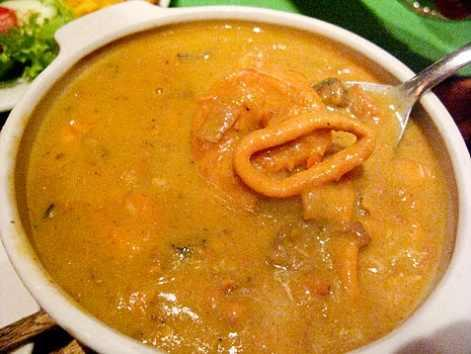

Welcome to Recetas de mariscos
16 riquísimas recetas con mariscos que no puedes dejar pasar
2021.06.23 22:05Inicio Descarga Recetas Desayunos Comidas Ensaladas Pasta Carnes y Aves Pescados y Mariscos Guarniciones Cenas Postres Bebidas Te recomendamos Saludable Recetas Pollo Pays de Queso Menús Caseros Recetas con huevo Gelatinas Tips de cocina Salud y Nutrición Recetarios Inicio Inicio Descarga Recetas Desayunos Comidas Ensaladas Pasta Carnes y Aves Pescados y Mariscos Guarniciones Cenas Postres Bebidas Te recomendamos Saludable Recetas Pollo Pays de Queso Menús Caseros Recetas con huevo Gelatinas Tips de cocina Salud y Nutrición Recetarios Inicio
Las Recetas de Comida y Cocina Fáciles, de toda la vida.
Inicio Recetas de Cocina 16 riquísimas recetas con mariscos que no puedes dejar pasar Recetas de Cocina16 riquísimas recetas con mariscos que no puedes dejar pasar
Por Josselin Melara marzo 25, 2020 0 Comenta
Califica este contenido!
Enviar voto
Promedio 3 / 5. Votos: 79
Estamos en la mejor temporada para disfrutar de unos ricos mariscos , ¡y puedes hacerlo desde casa! Te compartimos las 16 recetas más deliciosas para prepararlas fácilmente. ¡No te podrás resistir!
Te interesa: Top 10 de mariscos para consumir en la Cuaresma
¿Qué son?
En gastronomía, son aquellos productos del mar que provienen de animales invertebrados comestibles. Entre los más comunes se encuentran:
Crustáceos: camarones, langostinos, cangrejos, percebes, entre otros. Moluscos: mejillones, almejas, berberechos, chipirones, pulpos, y otros.México cuenta con una gran variedad, especialmente el camarón y el pulpo. Gracias a eso, contamos con una gran variedad de platillos típicos y regionales: cocteles, pescadillas, aguachile y muchos más.
No hay mejor temporada para disfrutar de unos ricos mariscos que la Cuaresma. Te decimos cuáles son los mejores y sus propiedades. Getty Images
Lo que debes saber
Una dieta rica en mariscos puede ayudar a reducir enfermedades cardiacas y puede prolongar la esperanza de vida después de haber sufrido un ataque al corazón. Estos reducen el nivel de triglicéridos y la presión en la sangre, además de mejorar los síntomas de la inflamación, la artritis y la psoriasis. Son ricos en proteínas, vitaminas y minerale, además de contener 20% de las proteínas de la carne roja y las aves. Y lo mejor: contienen mucho menor grasa que éstas. Si quieres incluir más los mariscos en tu dieta, la recomendación es consumirlos de 2 a 3 veces por semana.Te interesa: 30 recetas de filete de pescado para comenzar la Cuaresma
Evita un mal rato con los mariscos
Mucho ojo: un grave peligro para la salud representan las bacterias marinas del género vibrio, contenidas en diferentes clases de mariscos.
Dichos microorganismos son portadores de serias infecciones que afectan el torrente sanguíneo y los tejidos del organismo humano.
Por esta razón, no es muy recomendable consumir ostras y otros mariscos en estado crudo si se duda de su procedencia o correcto almacenamiento.
Por eso, te recomendamos comprar mariscos en lugares establecidos y certificados, lavarlos perfectamente y evitar comerlos crudos. Así podrás disfrutar con seguridad de su gran sabor.
Ver Recetas:
Caldo de mariscos rojo con huachinango
Prueba el sabor más delicioso del mar con este caldo de mariscos rojo con huachinango. Te compartimos la receta para que la disfrutes.
Receta de mariscos con arroz
Disfruta de esta temporada preparado esta receta de mariscos con arroz. Te damos el paso a paso para que te quede deliciosa.
Pasta concha grande rellena de mariscos
Si buscas mariscos recetas, te va a encantar esta pasta concha grande rellena de mariscos. Te decimos cómo prepararla.
Pasta con mariscos estilo marinara
Para que te des gusto cocinando, tienes que preparar esta pasta con mariscos estilo marinara. ¡Vamos a cocinar!
Mariscada
Aprovecha esta temporada de primavera para disfrutar de una mariscada al aire libre, acompañada de unos ricos elotes asados.
Sopa de mariscos
Vas a querer repetir esta sopa de mariscos después de que la prepares en casa y la pruebes. ¡Te va a quedar deliciosa con nuestra receta!
Crema de mariscos
No te quedes con el antojo de probar unos mariscos receta en crema, tan fácil que querrás prepararla hoy mismo.
Ceviche de mariscos con vinagreta de chile serrano
Pasa una deliciosa tarde compartiendo con tu familia este ceviche de mariscos con vinagreta de chile serrano. ¡Toma nota!
Arroz a la tumbada
Prepara un tradicional y delicioso arroz a la tumbada, un platillo mexicano con los sabores del mar que no puedes dejar pasar.
Espagueti con mariscos
Disfruta del sabor de la Cuaresma con este exquisito espagueti con mariscos. Toma nota del paso a paso para hacerlo en casa.
Chilaquiles verdes con mariscos
En esta Cuaresma, no te quedes sin probar esta salsa verde para chilaquiles con mariscos. ¡Pruébala y déjate conquistar!
Caldo de mariscos: receta con chorizo
Prueba este caldo de mariscos receta com un toque muy especial: chorizo. Te encantará su sabor y querrás probarlo de nuevo.
Molcajete de mariscos
Este molcajete de mariscos combina el sabor tropical y tradicional que tanto te encanta. Te decimos cómo prepararlo.
Tostada de mariscos, ¡la imperdible de la Cuaresma!
Los mariscos son los reyes de las mesas en la temporada de Cuaresma, y una forma muy práctica y deliciosa de comerlos son con una tostada de mariscos. Sigue leyendo…
Sopa verde de mariscos
Si se te antoja probar algo nuevo y con un gran sabor, te recomendamos esta receta de sopa verde de mariscos. Sigue leyendo y conoce todo lo que necesitas para…
Fusilli con mariscos en salsa de jitomate
¿Se te antó la receta? El fusilli con mariscos en salsa de jitomate es una verdadera delicia. Si busca una receta especial para una noche romántica has llegado al mejor…
Parrillada de mariscos
Si amas las parrilladas de mariscos con la familia, no puedes dejar de hacerla en esta Cuaresma. Te decimos cuáles son los ingredientes que no deben quedar fuera de esta…
0 Comenta 0 Facebook Twitter Google + Pinterest AnteriorCómo evitar comer por ansiedad durante la cuarentena
SiguienteBeneficios del agua mineral y los usos que puedes darle
Estas Recetas te Encantarán
18 saludables recetas con chía
agosto 8, 201913 recetas de crepas saladas y deliciosas para
enero 18, 2021Hamburguesas ricas estilo cupcake
abril 27, 202110 recetas fáciles de comidas para prepararle a
agosto 5, 2019Recetas con arroz para toda la familia
octubre 3, 201923 deliciosas recetas de cupcakes caseros
febrero 7, 202020 recetas para disfrutar de unos ricos champiñones
junio 6, 201917 formas de preparar una deliciosa sopa de
diciembre 11, 20205 diferentes formas de preparar ratatouille
octubre 24, 2019Muslos de pollo con limón, mostaza y miel
mayo 25, 2021Lo más leído
130 ensaladas saludables para cada día del mes
224 recetas de comida mexicana tradicionales y deliciosas
3Enamórate de estas 23 recetas vegetarianas
4Recetas de jugo verde para nutrir y desintoxicar tu cuerpo
516 recetas de espinacas que te harán amarlas
Facebook Twitter Instagram YoutubeEDITORIAL TELEVISA S.A. DE C.V. TODOS LOS DERECHOS RESERVADOS. TBG - EDITORIAL TELEVISA - LIFESTYLES - FOOD
Regresar al inicio Este sitio utiliza cookies para ayudarnos a mejorar tu experiencia cada vez que lo visites. Al continuar navegando en él, estarás aceptando su uso. Podrás deshabilitarlas accediendo a la configuración de tu navegador. Leer Más Acepto Privacy & Cookies Policy
Privacy Overview
This website uses cookies to improve your experience while you navigate through the website. Out of these cookies, the cookies that are categorized as necessary are stored on your browser as they are as essential for the working of basic functionalities of the website. We also use third-party cookies that help us analyze and understand how you use this website. These cookies will be stored in your browser only with your consent. You also have the option to opt-out of these cookies. But opting out of some of these cookies may have an effect on your browsing experience.
Privacy OverviewThis website uses cookies to improve your experience while you navigate through the website. Out of these cookies, the cookies that are categorized as necessary are stored on your browser as they are as essential for the working of basic functionalities of the website. We also use third-party cookies that help us analyze and understand how you use this website. These cookies will be stored in your browser only with your consent. You also have the option to opt-out of these cookies. But opting out of some of these cookies may have an effect on your browsing experience.
necessary Always EnabledNecessary cookies are absolutely essential for the website to function properly. This category only includes cookies that ensures basic functionalities and security features of the website. These cookies do not store any personal information.
non-necessaryAny cookies that may not be particularly necessary for the website to function and is used specifically to collect user personal data via analytics, ads, other embedded contents are termed as non-necessary cookies. It is mandatory to procure user consent prior to running these cookies on your website.
